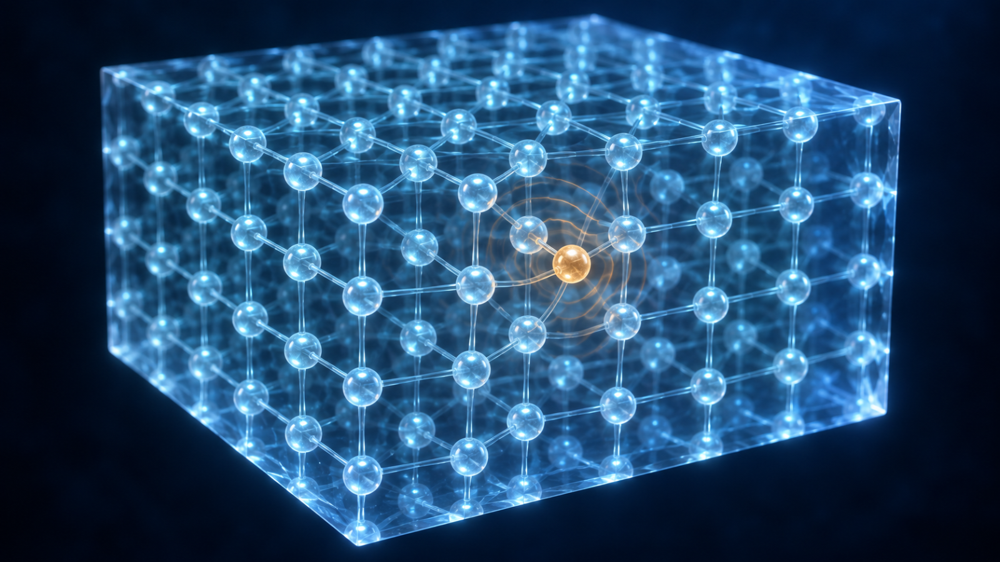
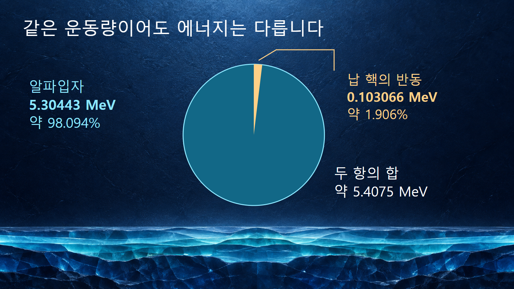
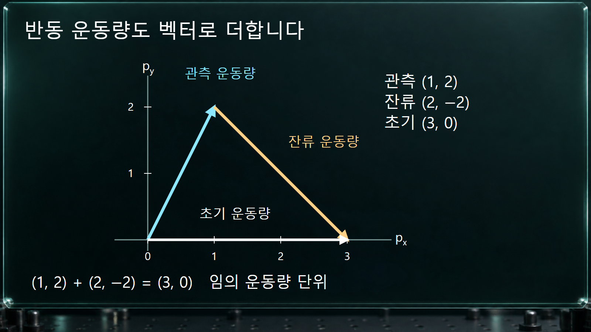

질량·에너지와 핵반응 · 028
운동량 보존과 반동
방출입자와 잔류핵의 운동량 합이 반응 전 운동량과 같아지는 현상

원자핵이 입자나 감마선을 내보내면 남은 핵도 반대쪽 운동량을 갖습니다. 이 반동은 부수적인 효과가 아니라 운동량 보존의 결과입니다. 두 물체의 운동량 크기가 같아도 질량이 다르면 속도와 운동에너지는 다르므로, 관측한 방출 입자 에너지를 곧바로 반응의 전체 에너지로 읽지 않아야 합니다.
1. 운동량은 방향까지 더하는 양입니다
외부에서 전달되는 충격량을 무시할 수 있는 계에서는 반응 전 운동량의 벡터합과 반응 후 벡터합이 같습니다. 느리게 움직이는 입자는 p⃗ = mv⃗로 나타내며, 방향을 포함한 속도 v⃗를 사용합니다. 오른쪽 운동량과 왼쪽 운동량을 단순히 양수끼리 더하면 보존 여부를 잘못 판단합니다.
정지한 부모핵이 두 입자로 붕괴할 때 초기 전체 운동량은 0입니다. 따라서 p⃗1 + p⃗2 = 0, 즉 두 운동량은 크기가 같고 방향이 반대입니다. 표적에 빔을 쏘는 반응에서는 초기 운동량이 0이 아닐 수 있으므로, 모든 생성물이 무조건 서로 정반대로 나와야 한다는 규칙으로 확대해서는 안 됩니다.
2. 무거운 핵은 같은 운동량을 더 작은 에너지로 가집니다
비상대론적 범위에서 운동에너지는 K = p2/(2m)입니다. 정지 부모핵의 두 입자 붕괴처럼 운동량 크기가 같으면 K1/K2 = m2/m1이 됩니다. 작은 질량의 입자 쪽이 더 큰 운동에너지를 가져가며, 무거운 잔류핵의 반동에너지는 작지만 0은 아닙니다.
두 입자의 질량을 m과 M, 운동에너지 합을 Q로 놓으면 Km ≈ Q·M/(m + M), KM ≈ Q·m/(m + M)로 나눌 수 있습니다. 이 식은 두 생성물만 있고 지정한 최종 상태의 Q가 모두 그 운동에너지로 나오는 경우의 저속 근사입니다. 추가 감마선이나 들뜸에너지가 남으면 해당 항을 수지에 따로 넣습니다.
3. 예시 1: 폴로늄-210에서 납-206의 반동
210Po → 206Pb + α의 주된 알파선에서 MIRDspecs 표는 알파입자 에너지 5.30443 MeV와 알파 반동 항 0.103066 MeV를 따로 제시합니다. 이 반동 항은 남은 납 핵에 해당하며, 약 103.066 keV입니다. 알파입자의 에너지가 5 MeV를 넘는다고 해서 납 핵이 정지해 있는 것은 아닙니다.
질량비를 질량수비 4/206으로 단순화하면 KPb ≈ 5.30443 × 4/206 ≈ 0.1030 MeV가 됩니다. 정밀 질량과 상대론적 보정을 생략한 빠른 검산이므로 평가표와 마지막 자릿수까지 일치할 것을 기대하지 않습니다. 두 표 항목의 합은 약 5.4075 MeV입니다. 이 합과 알파입자 한 개의 에너지 5.30443 MeV를 구분합니다.
해당 요약표에서는 수율이 작은 선을 제외합니다. [1] 따라서 표시된 두 항의 반올림 합을 모든 분기와 전자 재배열까지 포함한 정밀 붕괴 Q값으로 취급하지 않습니다. 이 예시의 목적은 무거운 딸핵도 에너지를 가져간다는 점을 확인하는 것입니다.

4. 예시 2: 1 MeV 감마선이 남기는 몇 eV
광자는 정지질량이 없지만 pγ = Eγ/c의 운동량을 갖습니다. 처음에 정지한 자유 핵이 감마선 하나를 내보내면 딸핵은 같은 크기의 반대 운동량을 갖습니다. 딸핵 질량을 M으로 놓고 반동이 느리다고 가정하면 KR ≈ Eγ2/(2Mc2)가 됩니다.
계산용 가상 예시로 방출된 감마선 에너지 1.000 MeV, 딸핵 질량 100 u를 지정합니다. Mc2 ≈ 93,149.410 MeV이므로 KR ≈ 12/(2 × 93,149.410) MeV = 0.000005368 MeV, 즉 약 5.368 eV입니다. 특정 핵종의 실제 준위를 인용한 예시는 아닙니다.
같은 질량에서 광자 에너지가 2배인 별도의 전이를 가정하면 반동에너지는 약 4배가 됩니다. 반대로 같은 광자 에너지에서 핵의 질량을 2배로 하면 반동은 약 절반입니다. 단위 변환에서는 1 MeV = 106 eV임을 적용하여 작은 반동을 빠뜨리지 않습니다.
5. 입사·방출 방향이 반동을 결정합니다
충돌 반응에서는 잔류핵의 운동량을 초기 전체 운동량에서 다른 생성물의 운동량을 벡터로 뺀 값으로 구합니다. 크기만 같은 두 방출 입자도 같은 방향으로 나오는지 서로 반대 방향으로 나오는지에 따라 잔류핵의 반동이 달라집니다. 따라서 실험에서 방출각을 기록하는 이유는 궤적을 보기 위해서만이 아니라 에너지 분배를 복원하기 위해서입니다.
가령 설명용 운동량 단위에서 초기 벡터를 (3, 0), 관측 입자의 벡터를 (1, 2)로 설정하면 나머지 계의 운동량은 (2, −2)입니다. 성분합 (1, 2) + (2, −2) = (3, 0)을 확인하면 세 벡터가 닫힙니다. 이는 벡터 보존의 산술 예시이며, 특정 핵반응이 이 조합으로 일어난다는 주장은 아닙니다. 실제 허용 여부에는 에너지와 질량 조건도 함께 필요합니다.

6. 어떤 반동을 계산하는지 먼저 정합니다
| 상황 | 반동의 기준 | 계산 시 주의점 |
|---|---|---|
| 정지 부모핵의 두 입자 붕괴 | 두 생성물의 운동량 크기가 같습니다. | 운동에너지 비는 저속 근사에서 질량비의 역수입니다. |
| 자유 핵의 감마선 하나 방출 | 핵의 운동량 크기는 Eγ/c입니다. | 전이에너지에는 광자 에너지와 반동에너지가 함께 포함됩니다. |
| 여러 감마선의 연속 방출 | 각 광자의 방향과 방출 시점이 영향을 줍니다. | 단일 광자식을 에너지 합에 그대로 적용하지 않습니다. |
| 물질 속 핵의 반동 | 최초 핵 반동과 이후 물질에 남는 신호를 구분합니다. | 전자 들뜸·원자 충돌·격자 운동과 검출 응답을 추가로 고려합니다. |
빠른 입자에는 K = p2/(2m) 대신 K = √(p2c2 + m2c4) − mc2를 사용합니다. 광자에는 질량을 0으로 넣은 비상대론식이 아니라 E = pc를 직접 적용합니다.
7. 작은 반동을 실제 검출기 교정에 사용합니다
CRAB·NUCLEUS 연구진은 2023년에 CaWO4 극저온 검출기에서 중성자 포획으로 유도한 약 112 eV 핵반동 피크를 보고했습니다. [3] 텅스텐-183의 단일 감마선 탈여기에서 예상한 구조를 약 3σ 유의도로 식별했으며, 낮은 에너지 문턱을 갖는 검출기의 교정 방법을 보여 주었습니다. 이 결과를 모든 검출기에서 같은 응답이 보장된다는 의미로 확대하지 않습니다.
핵반동을 이해하면 방출선 에너지에서 빠진 작은 몫을 찾고, 검출기가 실제로 기록한 신호가 무엇인지 구분할 수 있습니다. 계산은 전체 계의 운동량 보존에서 시작하고, 반동에너지로 변환한 뒤, 마지막에 주변 물질과 측정기의 응답을 연결하는 순서로 진행합니다.